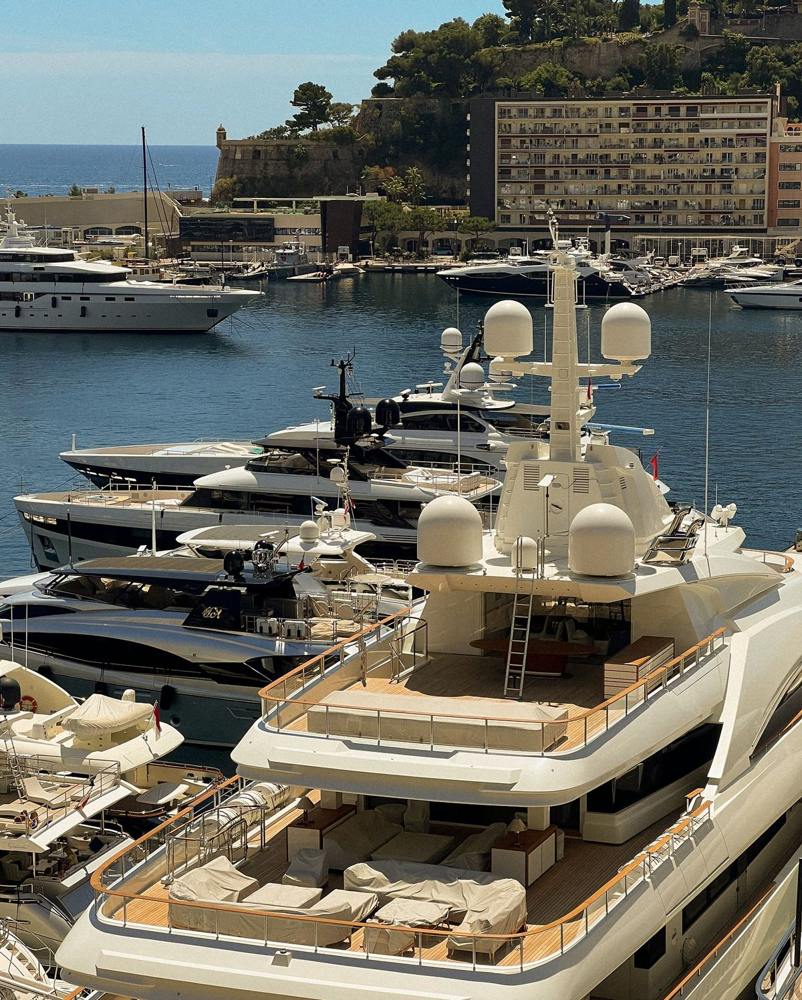
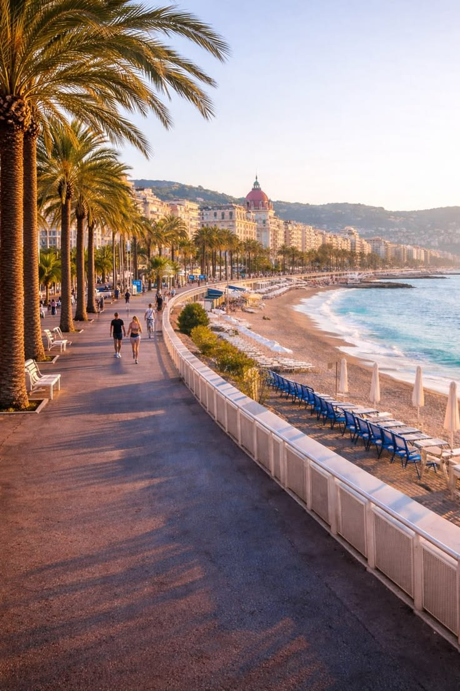
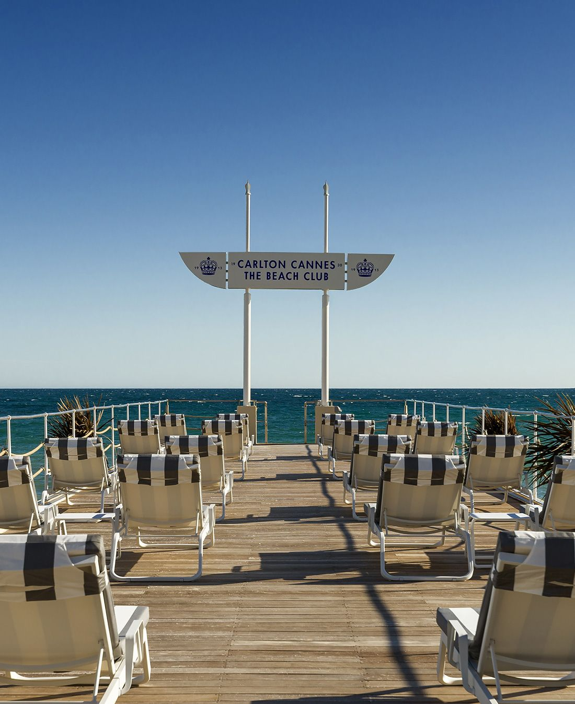

A Legacy of Elegance
The French Riviera is one of the country’s finest regions and has been a cherished holiday destination for centuries. The region's beauty was first recognised by European aristocrats in the 18th century, which commenced the Riviera's development as grand promenades, casinos, and palaces were built.
Today, the French Riviera is adored by tourists, artists, and A-listers alike. It remains a timeless icon of sun-drenched shores, luxurious escapes, and a relaxed, elegant lifestyle.
Discover the Coast
Explore Nice, Monaco, and Cannes from above through our interactive map

Luxury & Glamour
Experience high-stakes elegance in the heart of Monte Carlo’s world-famous casinos and yacht clubs.
Explore Monaco
Cultural Heart
Walk the historic cobblestone streets and vibrant flower markets of the legendary Old Town.
Explore Nice
Film & Festival
Walk the red carpet of the Palais des Festivals and bask on the golden sands of the Croisette.
Explore Cannes